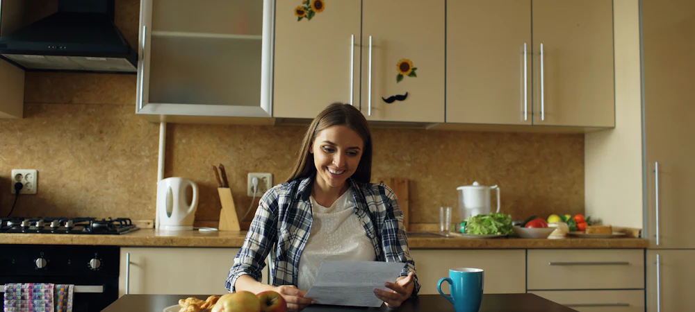

¿Fonasa o Isapre? Qué conviene más
Las diferencias reales entre los dos sistemas, explicadas sin letra chica y sin empujarte a ningún lado.

Muchos ejecutivos de Isapre te van a decir que salgas de Fonasa cuanto antes y contrates una Isapre. La verdad es que siempre depende de tu situación. No es lo mismo una persona sola que alguien con tres cargas, y también pesan tus expectativas, tu estado de salud, tu renta imponible, las clínicas donde te quieres atender y los porcentajes de cobertura que necesitas.
Fonasa es un buen sistema. Justamente porque la atención en la red pública es gratuita, la demanda es mucho mayor, y ese es su principal problema: las listas de espera. Existe una modalidad para atenderte en clínicas privadas con bonos, pero hay que saber muy bien qué clínicas tienen convenio y para qué procedimientos.
Los dos sistemas se financian con el 7% de tu renta imponible; lo que tú decides es a dónde va. Para que lo veas claro, acá tienes cómo funciona cada uno, lado a lado.
Fonasa e Isapre, lado a lado
La información es general. Cada plan de Isapre tiene condiciones propias que conviene revisar antes de firmar. Los tiempos de espera son las medianas de la lista de espera No GES al cuarto trimestre de 2025, informadas por el Gobierno de Chile con datos del Minsal.
Cuándo conviene Fonasa
- Si tienes varias cargas. Tu 7% cubre a toda tu familia sin pagar más. En una Isapre, cada carga encarece el plan.
- Si tienes una enfermedad diagnosticada. Fonasa no te puede rechazar ni excluir nada. En una Isapre, esa condición puede quedar con restricciones.
- Si tu renta es baja. Puede que tu 7% no alcance para un plan de Isapre que te cubra bien, y terminarías pagando de más por una cobertura menor.
- Si te atiendes en la red pública. Allí la atención no tiene copago, cualquiera sea tu tramo.
Cuándo conviene una Isapre
- Si quieres elegir tu clínica y tu médico. Tu plan define una red preferente donde tienes cobertura alta.
- Si quieres agendar directo con un especialista, en la clínica y el horario que te acomode.
- Si quieres protección ante lo más grave. La CAEC existe solo en las Isapres.
- Si eres joven, sin cargas y tu 7% es alto. Es probable que ese 7% te alcance para un buen plan sin pagar un peso adicional.
Lo que casi nadie te dice
El GES no es una razón para cambiarte. Existe en los dos sistemas. Lo que cambia es quién te atiende: en Fonasa, la red pública; en una Isapre, la clínica que ella designa.
Una Isapre no tiene por qué ser cara. Muchos ejecutivos van a buscar que pagues el plan más alto, y por eso la gente cree que una Isapre es inalcanzable. Pero hoy existen planes de bajo precio que igual te dan acceso a la CAEC. Eso significa que, aunque tu plan no cubra el 100%, si te pasa algo grave, como una enfermedad de alto costo o un accidente, la CAEC cubre los gastos de ese evento por sobre un deducible, atendiéndote en la clínica privada que designa la Isapre.
Eso sí, una Isapre barata puede salirte más cara que Fonasa si su red no calza con las clínicas donde te atiendes, o si tiene topes bajos justo en lo que más usas. Es de los errores más comunes al contratar una Isapre.
Volver a una Isapre no siempre es fácil. Si te cambias a Fonasa y en ese tiempo te diagnostican una enfermedad, al volver tendrás que declararla, y la Isapre puede aplicar restricciones. Por eso conviene pensarlo bien antes de moverte.
Si te quedas en Fonasa, ojo con esto
Una urgencia en clínica privada puede salirte muy cara. Si estás en Fonasa y llegas a la urgencia de una clínica privada por algo que no es de riesgo vital, Fonasa solo cubre las prestaciones de su arancel de libre elección, y hasta el monto de ese arancel. La diferencia la pagas tú, y en algo tan simple como una urgencia la cuenta puede ser muy alta. Si la urgencia sí es de riesgo vital, la Ley de Urgencia obliga a la clínica a atenderte sin exigirte garantía.
Un seguro complementario ayuda, pero no reemplaza a una Isapre. Para bonos y exámenes puede convenir. En una hospitalización es otra historia. Muchos seguros exigen una bonificación mínima, lo que en el rubro se conoce como BMI: el porcentaje de la cuenta que tu sistema de salud tiene que haber cubierto para que el seguro pague los valores comprometidos. En una clínica privada lo que cubre Fonasa suele ser bajo, así que ese mínimo muchas veces no se cumple y el seguro termina reembolsando bastante menos de lo que esperabas. Por eso suele ser necesario sumarle un seguro catastrófico, y entre tu 7%, el complementario y el catastrófico, lo que pagas al mes puede acercarse a lo que costaría una Isapre. Su nombre lo dice: es complementario. Te lo explicamos con ejercicios en la verdad detrás de Fonasa más seguro complementario.
¿Y en tu caso, qué conviene?
Depende de tu renta, tus cargas y dónde te atiendes. Cuéntanos tu situación y te decimos qué te conviene, aunque la respuesta sea quedarte en Fonasa.
Quiero que me asesoren →Artículos que te podrían interesar
 Fonasa + seguro complementario: la verdad detrás de esta combinaciónCómo funcionan de verdad la BMI, el deducible y los topes, con ejercicios, y la comparación con una Isapre.
Fonasa + seguro complementario: la verdad detrás de esta combinaciónCómo funcionan de verdad la BMI, el deducible y los topes, con ejercicios, y la comparación con una Isapre.
 ¿Cuál es la mejor Isapre en 2026? Tabla comparativaLas 7 Isapres abiertas comparadas: precios por edad, urgencias, reembolsos y reclamos.
De Fonasa a Isapre: tips para elegir un buen planOcho puntos que revisar antes de firmar: red preferente, topes, urgencias, CAEC y reembolsos.
¿Cuál es la mejor Isapre en 2026? Tabla comparativaLas 7 Isapres abiertas comparadas: precios por edad, urgencias, reembolsos y reclamos.
De Fonasa a Isapre: tips para elegir un buen planOcho puntos que revisar antes de firmar: red preferente, topes, urgencias, CAEC y reembolsos.
La información de este artículo es general y puede cambiar según la normativa vigente. Para evaluar tu caso particular, te recomendamos una asesoría.